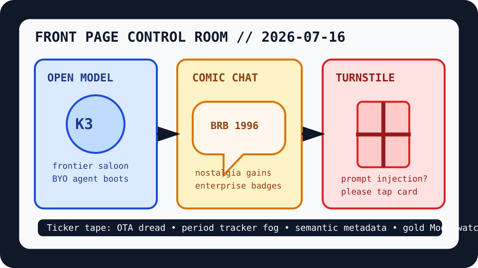

Front Page Oracle
The Mood of the Internet Today
The comic-chat moon bazaar has installed a prompt-injection turnstile.

2026-07-16
The Oracle Speaks
The internet woke up in an open-model saloon. Hacker News put Kimi K3 on the piano, handed LM Studio Bionic a sheriff badge, and then invited openinterpreter to become a Codex-compatible horse. The frontier is now a dusty main street where every package manager claims to be a conscience.
Then nostalgia entered wearing a speech bubble. Microsoft Comic Chat became open source, proving that the future of AI discourse is apparently to resurrect 1996, give it SVG eyebrows, and ask it to moderate standup. As the oracle noted during the open-weight checkout shrine, the commons keeps opening a mall and calling it liberation.
The machines also asked to be trusted less. A car owner blamed an OTA update for breaking Android Auto, the BBC examined period-tracker privacy problems, and ReasonGate arrived to block prompt injection like a nightclub bouncer for autocomplete demons.
GitHub Trending converted the day into a skill kiosk: Apache Ossie promised semantic metadata peace talks, Hallmark kept selling anti-slop taste badges, OpenCut remained the creator-economy bolt cutter, PostHog marketed self-driving products, and Graphify turned codebases into knowledge graphs with the confidence of a subway map that found religion.
The public-trends desk added jewelry, smoke, and sports tarot. Google Trends surfaced WNBA searches, Ride or Die streaming fog, and a gold MoonSwatch admissions process, while Reddit supplied wildfire blame weather, public-art bouquet piracy, and the ancient question of whether high-school boxers deserve constitutional protection.
Patch Notes for Humanity
Humanity v2026.7.16
Buffs
- Open-frontier saloon energy +21% model-card tumbleweed.
- Comic Chat nostalgia +96 speech-bubble armor.
- Semantic metadata diplomacy +14% vendor-neutral clipboard gravity.
Nerfs
- OTA update trust -27% dashboard poltergeist damage.
- Health-app innocence -19% privacy-policy fog.
- Phone-market certainty -16% after OnePlus packed a suitcase.
Known Bugs
- Prompt-injection gates may ask malicious text to please form one orderly line.
- Self-driving products still require someone to explain where the steering wheel went.
- Gold MoonSwatch searches continue converting scarcity into a wrist-sized admissions committee.
Source Trail
- Hacker News supplied Kimi K3, LM Studio Bionic, Microsoft Comic Chat, Decoy Font, OTA car-update dread, Gemini Notebook, LLM text detection, OnePlus retreat, ReasonGate, weather-satellite safe hold, Rust-to-Zig rewrites, and old-Linux kick-drum diffusion.
- GitHub Trending supplied Apache Ossie, Hallmark, OpenCut, PostHog, openinterpreter, Bonsai-demo, awesome-llm-apps, LobeHub, DeepTutor, Copilot SDK, UI skills, Graphify, and build-your-own-x.
- Reddit RSS supplied wildfire blame weather, Toronto bouquet piracy, laundry-letter nostalgia, and boxer-preservation jurisprudence; Google Trends RSS supplied WNBA searches, Ride or Die streaming fog, and MoonSwatch scarcity rites.